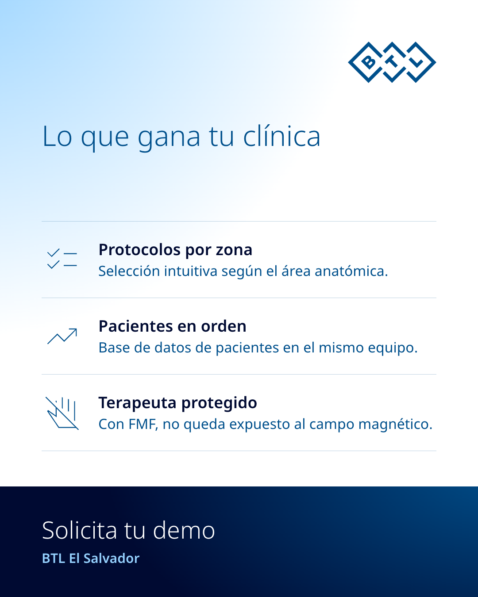

![Arriba, sobre un degradado claro, dos fotos oficiales de pacientes usando BTL Magnetotherapy: una recostada en la camilla con el aplicador de anillo en las piernas ("Aplicador de anillo") y otra sentada con el aplicador de disco bajo el antebrazo ("Aplicador de disco"). Abajo, sobre azul oscuro: "BTL Magnetotherapy". Titular: "Magnetoterapia que llega a cada zona del cuerpo." Cifra: "8 aplicadores". Texto: "Un solo equipo, con el aplicador adecuado para cada paciente." Logo de BTL arriba a la derecha y "Desliza: lo que gana tu clínica".](slide-02.png)


Cuando el hueso se vuelve frágil, la consulta se vuelve clave. Hoy, 20 de octubre, es el Día Mundial de la Osteoporosis: ¿qué puede ofrecer tu consulta de rehabilitación? BTL Magnetotherapy: magnetoterapia que llega a cada zona del cuerpo, con 8 aplicadores y hasta 4 canales en un solo equipo. Para tu clínica: protocolos por área anatómica, base de datos de pacientes y tecnología FMF, para que el terapeuta no quede expuesto al campo magnético. Escríbenos "DEMO" por mensaje directo y solicita tu demo con BTL El Salvador. #DíaMundialDeLaOsteoporosis #Osteoporosis #Fisioterapia #Magnetoterapia #BTLElSalvador